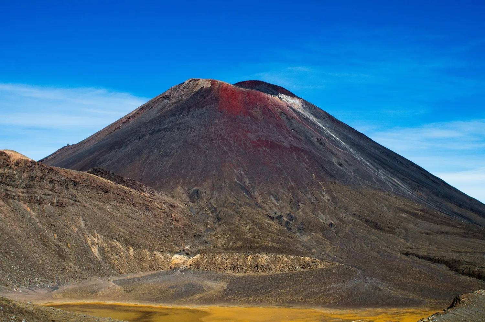
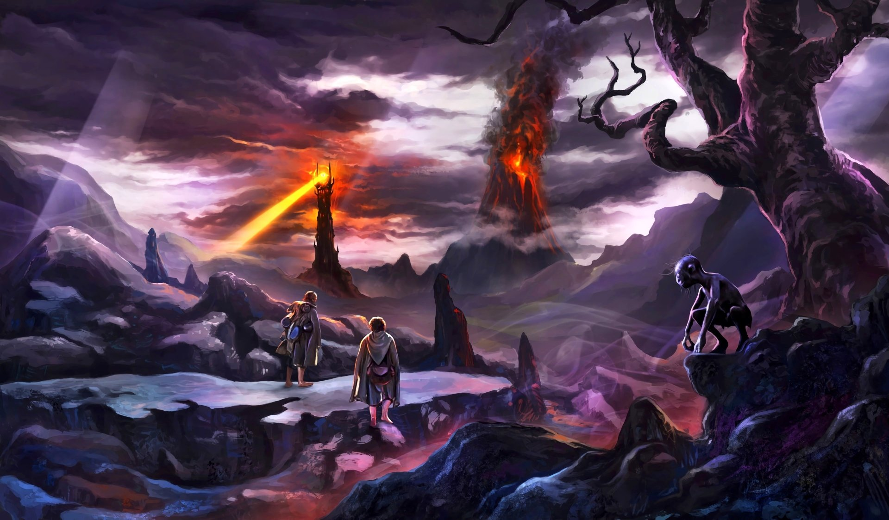
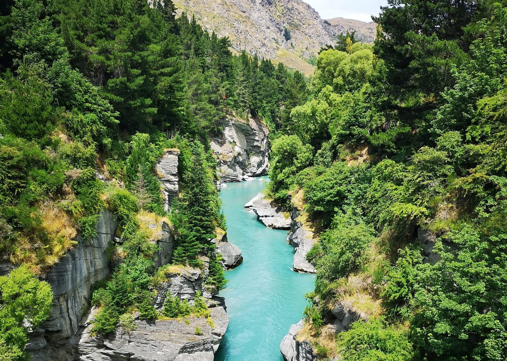
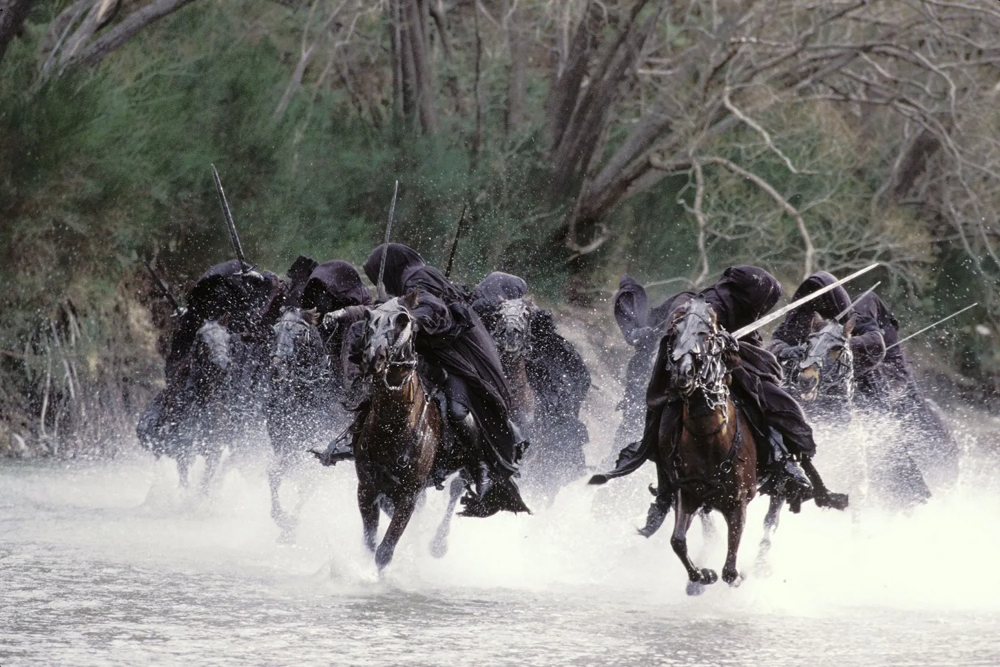
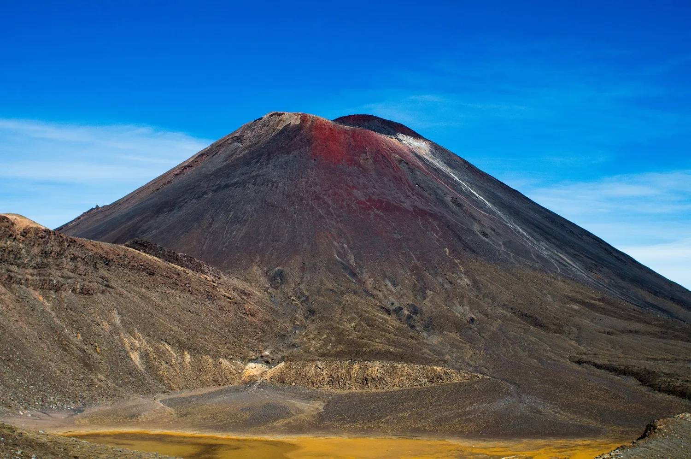
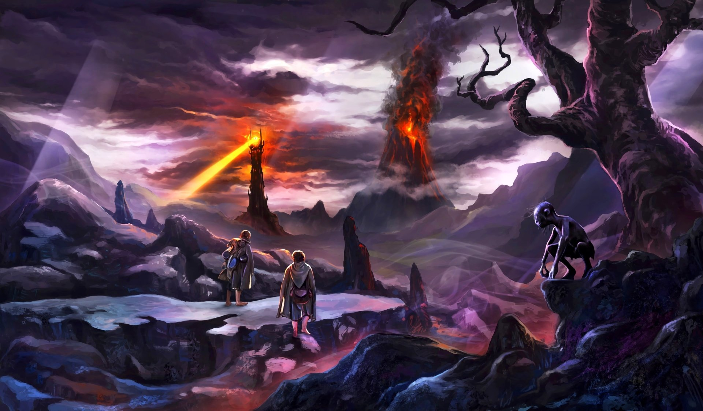
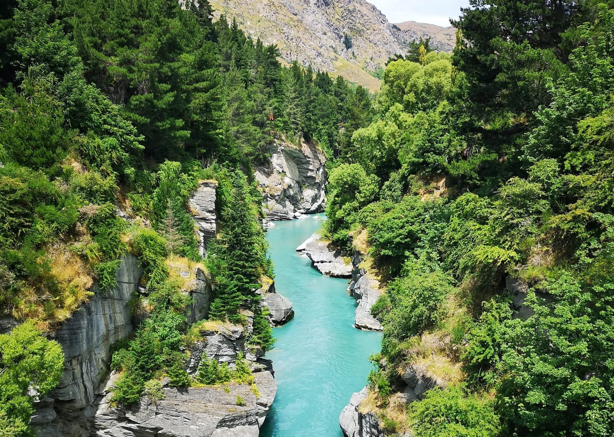
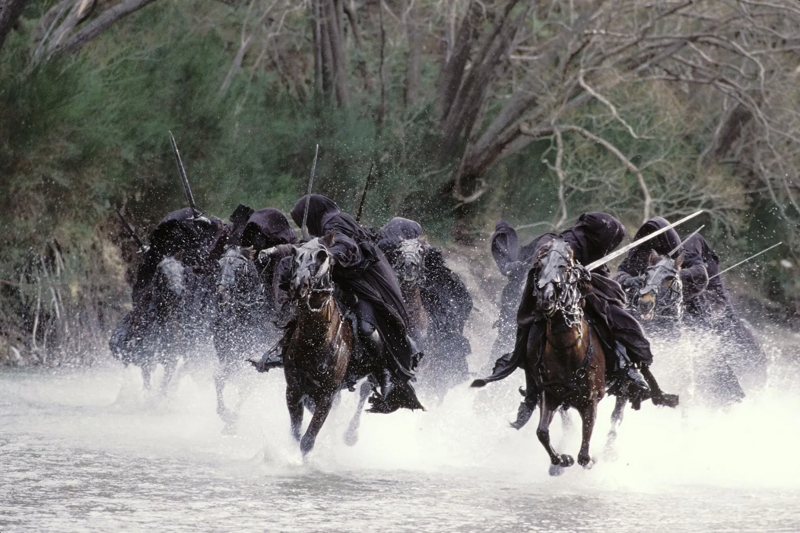

Lugares de rodaje
Matamata, NZ - Hobbiton
Matamata en el distrito de Wikato, Nueva Zelanda es probablemente el mas famoso set de grabación de "El señor de los anillos". Hobbiton es el unico set que permanece en pie posterior a la culminación de las grabaciones, lo cual adhiere popularidad al lugar para aquellos que quieren ver como se ve una casa de Hobbit.
La unica manera de visitar el lugar es con una visita guiada que se encarga de dar vida al la experiencia de la vida en la Comarca
Cuenta con 44 casas entre las que se incluye Bag End, la casa de Bilbo y Frodo, así como la posada el Dragón Verde, el molino y el Party Tree, lugar en el que se festeja el cumpleaños de Bilbo.
Monte Ngauruhoe - Monte del Destino
Los fans de El Señor de los Anillos reconocerán inmediatamente esta montaña de 2.287 metros de altura como el apropiadamente llamado Monte del Destino. En las películas, el Anillo Único fue consumido por la lava del Monte del Destino para acabar con el malvado Sauron.
La montaña se encuentra en el Parque Nacional de Tongariro, en la isla norte, que a su vez fue representada como la tierra de Sauron, Mordor, en las películas.
El monte Ngauruhoe, uno de los lugares de rodaje de El Señor de los Anillos más reconocibles de Nueva Zelanda, es, al igual que el Monte del Destino ficticio, un volcán activo. Ha entrado en erupción más de 70 veces entre 1839 y 1975, pero se ha enfriado con el paso de las décadas.
La excursión de 20 kilómetros Tongariro Alpine Crossing, uno de los nueve Grandes Paseos de Nueva Zelanda, lleva a los visitantes más allá del monte Ngauruhoe. Sin embargo, la montaña es sagrada para los maoríes y, por tanto, se recomienda a los excursionistas que no suban a ella.
Cañón Skipper - Escena de Nazguls
El río Shotover en el Cañón Skippers. Situado cerca de Queenstown, en la Isla Sur de Nueva Zelanda, el Cañón Skippers es sin duda uno de los mejores lugares de rodaje de Nueva Zelanda, aunque apareció muy brevemente en La Comunidad del Anillo (2001).
La escena en la que aparece el Cañón de Skippers es, sin embargo, una de las mejores en CGI y tal vez marque el estado de ánimo de lo que iba a ocurrir a continuación. Perseguida por los Espectros del Anillo, Arwen convoca una inundación que toma la forma de caballos que galopan furiosamente para arrastrar a los ominosos jinetes negros.
El río donde se rodó la escena en el Cañón de los Patrones se conoce como Shotover.
Pero llegar al Skippers Canyon requerirá un valor de otro tipo, ya que la carretera de grava es escarpada y una de las más peligrosas del mundo debido a los escarpados acantilados de uno de sus lados.
 






